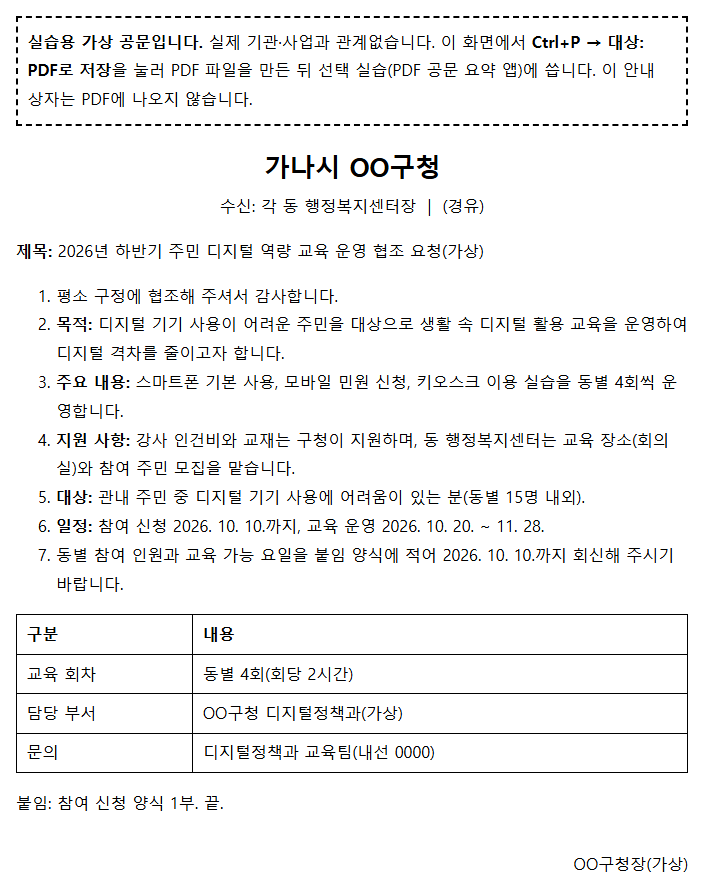
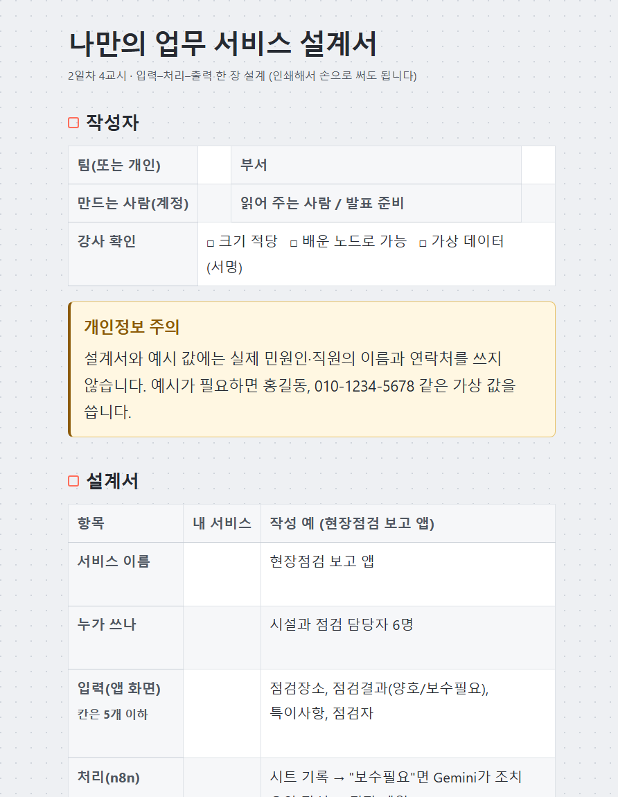
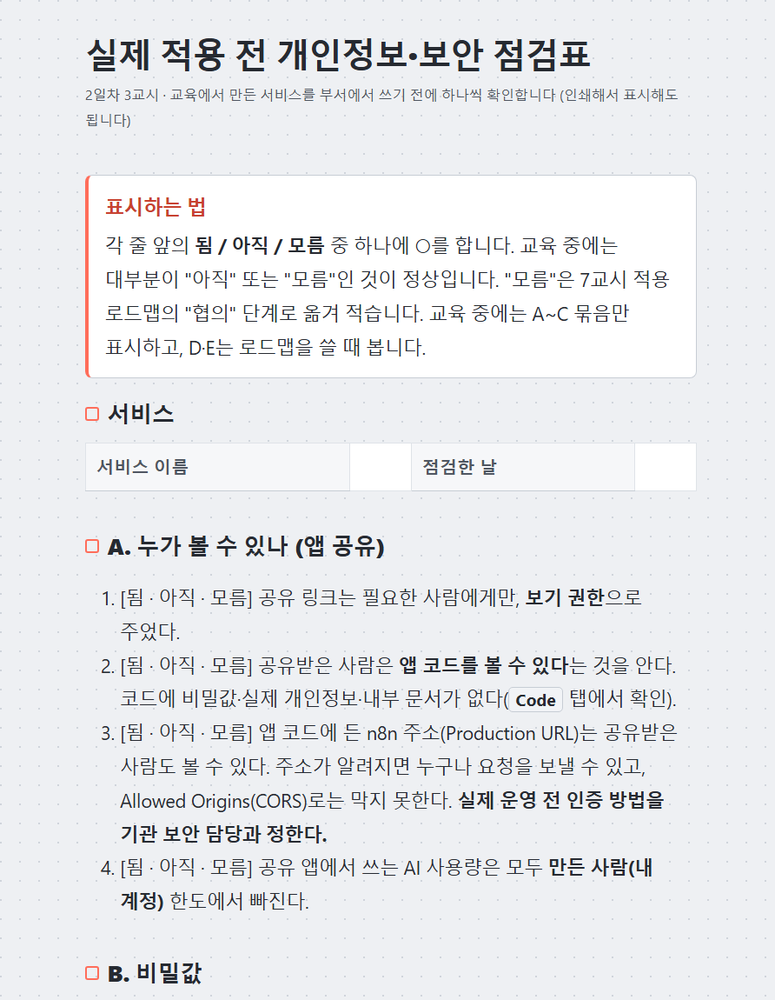
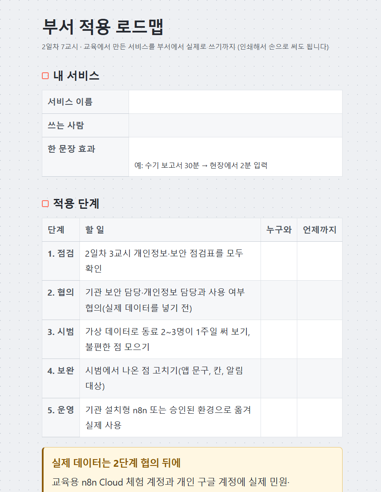
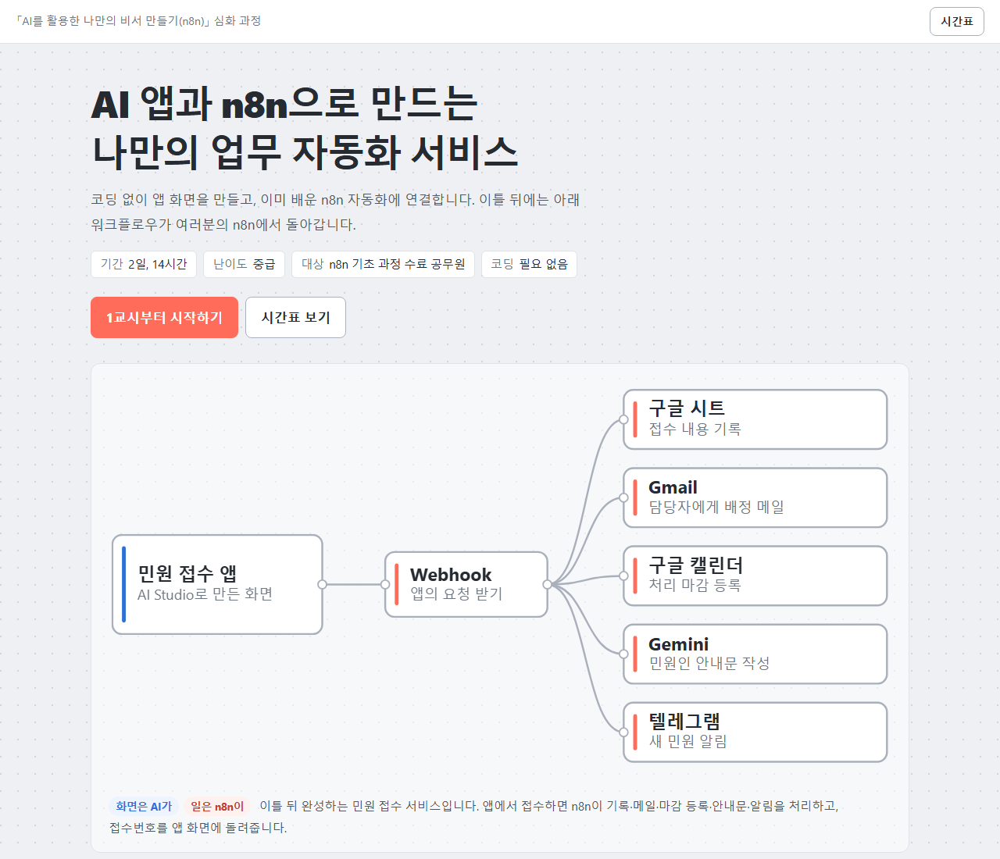
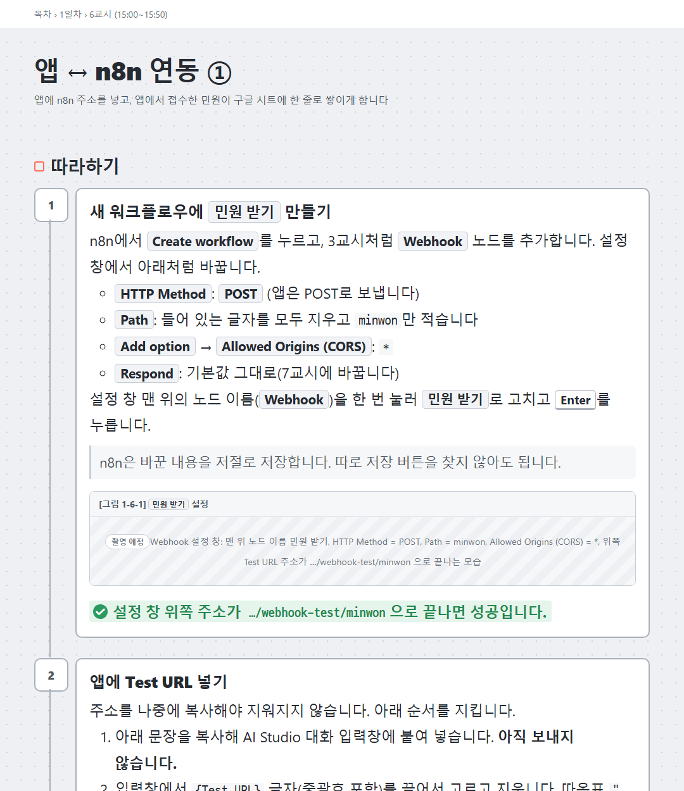

| 교육목표 | Google AI Studio(무료 AI 앱 빌더)로 업무용 앱 화면을 만들고 n8n 자동화와 Webhook으로 연동하여, 접수→기록→알림→회신·조회로 이어지는 나만의 업무 자동화 서비스를 직접 구축·공유하는 능력 향상 | ||
|---|---|---|---|
| 교육대상 | 「AI를 활용한 나만의 비서 만들기(n8n)」 수료자 또는 n8n 워크플로우(트리거–처리–결과)를 만들어 본 국가직·지방직 공무원(민원 접수·신청 접수·현장 보고 등 반복 행정업무 담당자) ※ 프로그래밍 경험 불필요 |
교육기간 | 2일(14시간) 중급 |
| 성명 | 소속(직위) | 주요 경력 |
|---|---|---|
| 김기태 | 인하공업전문대학 (조교수) |
|
| (성명) | (소속) (보조강사) |
|
| 과정개요 | AI 앱 화면(Google AI Studio)과 n8n 자동화를 Webhook으로 연결하는 업무 서비스 구축 프로세스를 이해하고, 민원 접수·처리 상태 조회·현장점검 보고 등 반복 행정업무를 앱과 자동화로 바꾸는 방법 및 부서 업무 적용사례 습득 | ||||||||||||||||||||||||||||||||||||
|---|---|---|---|---|---|---|---|---|---|---|---|---|---|---|---|---|---|---|---|---|---|---|---|---|---|---|---|---|---|---|---|---|---|---|---|---|---|
| 과정분류 | 업무자동화 | 난이도 | 중 | ||||||||||||||||||||||||||||||||||
| 기초지식 | 선수과목 「AI를 활용한 나만의 비서 만들기(n8n)」 수료 또는 동등 수준(트리거–처리–결과 워크플로우 구성, 구글 시트·Gmail 노드와 표현식 {{ }} 사용 경험) ※ 프로그래밍 경험 불필요 | ||||||||||||||||||||||||||||||||||||
| 교재/사용SW | 「AI 앱과 n8n으로 만드는 나만의 업무 자동화 서비스」(자체파일: 웹 교안 + 인쇄 교재, 교시별 완성 워크플로우 JSON 9종, AI Studio 프롬프트 템플릿 11종, 설계서·점검표·로드맵 양식 3종) / Google AI Studio(Build), n8n Cloud, Gemini API, Google Sheets·Gmail·Google Calendar, Telegram(모두 무료 사용 범위)
※ 교육망 예외처리 요청: aistudio.google.com, ai.studio, *.usercontent.goog(AI Studio 앱 미리보기), accounts.google.com, docs·mail·calendar.google.com, generativelanguage.googleapis.com, *.n8n.cloud, esm.sh·cdn.jsdelivr.net, web.telegram.org·api.telegram.org, harness-n8n.vercel.app(웹 교안) — 교육 1주 전 교육장 PC 접속 사전 점검
※ 수강생 사전 준비: 만 18세 이상 나이 확인된 개인 구글 계정(기관 계정은 AI Studio 사용이 막힐 수 있음), n8n Cloud 무료 체험 계정(교육 중 만료되지 않도록 개설 시점 안내), Gemini API 키, 텔레그램 계정 | ||||||||||||||||||||||||||||||||||||
| 교육내용 |
| ||||||||||||||||||||||||||||||||||||
| 구 분 | 1일차 n8n 다지기 + 첫 앱 + 연결 | 2일차 자동화 확장 + 내 업무 서비스 (유료계정 불필요 — 모두 무료 사용 범위) |
|---|---|---|
| 1교시 (09:00~09:50) | ◦입과 안내 및 과정 소개 - 완성 서비스 시연(앱 접수 → 시트·메일·캘린더·AI 안내문·텔레그램 → 접수번호 회신) - "화면은 AI가, 일은 n8n이" 역할 분담, 가상 데이터 원칙 - 준비물 점검, 사전조사한 "자동화 희망 업무" 공유 | ◦앱 ↔ n8n 연동 ② - 담당자 메일(Gmail) 발송 - 구글 캘린더에 처리 마감 등록 - Gemini 민원인 안내문 생성 → 앱 화면에 표시 |
| 2교시 (10:00~10:50) | ◦n8n 핵심 복습 실습 - 트리거–처리–결과 구조, 표현식 {{ }} - 구글 시트 기록, Gmail 발송, Gemini 안내문 - 완성본 가져오기(Import)·자격 증명 연결로 수준 맞추기 | ◦연동 ② 완성 - If 조건 분기(민원 종류별 담당자 배정) - 처리 상태 조회: 조회용 Webhook + 앱 조회 화면 - 텔레그램 접수 알림 |
| 3교시 (11:00~11:50) | ◦Webhook 이해와 실습 - 앱과 자동화가 대화하는 방법(외부 앱이 n8n을 부르는 주소) - Test URL → Publish → Production URL 순서 - Respond to Webhook으로 답 돌려주기, 브라우저 호출 테스트 - Allowed Origins(CORS) 설정 | ◦앱 배포·공유·보안 - AI Studio 공유 링크 만들고 옆 사람과 서로 접수 시험 - 비밀값(API 키) 관리, 앱 코드 점검 - 실행 기록에 남는 개인정보 확인, 개인정보·보안 점검표 - 기관 설치형 n8n 전환 안내 |
| 점심 | 12:00~13:00 | |
| 4교시 (13:00~13:50) | ◦AI 앱 빌더 첫 체험 - Google AI Studio Build 화면 구성 - 문장(프롬프트)으로 앱 만드는 원리 - 프롬프트 템플릿으로 민원 접수 화면 생성 | ◦프로젝트 기획 - 부서별 시나리오 확정(개인 또는 2~3인 팀) - 입력–처리–출력 설계서 작성, 강사 검토 - 설계서를 AI Studio 프롬프트로 옮기기 |
| 5교시 (14:00~14:50) | ◦첫 앱 다듬기 - 화면 수정 요청하기(구체적인 문장으로) - 오류 대처 루틴(오류 문구 복사 → AI에 붙여 넣고 수정 요청) 반복 연습 | ◦프로젝트 제작 ① - 프롬프트 템플릿을 고쳐 내 앱 화면 생성 - 완성 워크플로우 파일을 변형해 내 워크플로우 구성 |
| 6교시 (15:00~15:50) | ◦앱 ↔ n8n 연동 ① - 앱에 Webhook 주소 넣기 - 접수 데이터 전송 → 구글 시트 기록 확인 - 연결 점검표로 주소·CORS 문제 해결 | ◦프로젝트 제작 ② - 앱–n8n 연동, 처음부터 끝까지 테스트 - 점검 순서표로 오류 원인 좁히기 - (선택 실습) PDF 공문 요약·음성 입력 기능 |
| 7교시 (16:00~16:50) | ◦연동 ① 완성 - 접수번호 생성·시트 기록 - 접수번호 회신(Respond to Webhook) → 앱 화면에 표시 - 1일차 정리 | ◦발표·피드백 및 적용 로드맵 - 내 서비스 뽐내기(팀별 5분) - 부서 적용 로드맵(점검 → 협의 → 시범 → 보완 → 운영) - 수료 설문 |
앱에서 민원을 접수하면 구글 시트에 접수번호와 함께 기록되고, 민원 종류별 담당자 메일·구글 캘린더 처리 마감·텔레그램 알림이 이어지며, Gemini가 쓴 안내문과 접수번호가 앱 화면에 표시됩니다. 접수번호로 처리 상태를 조회하는 화면까지 만듭니다.
| 실습 전 | 실습 후 |
|---|---|
기초과정 결과: n8n 기본 폼으로 접수 (전용 앱 화면·접수번호·상태 조회 없음) |
AI Studio로 만든 민원 접수 앱(화면 예시 — 생성할 때마다 색·배치는 조금씩 다름) |
앱 뒤에서 일하는 n8n 워크플로우(과정 최종 완성본, 노드 18개) — 접수와 상태 조회 두 입구 | |
수강생(팀)이 자기 업무로 입력–처리–출력 설계서를 쓰고, 민원 접수 완성 파일을 고쳐 서비스를 완성해 발표합니다. 다른 주제 예: 교육·행사 신청 접수, 회의록 정리, 부서 지침 Q&A.
| 실습 전 | 실습 후 | ||||||||||||
|---|---|---|---|---|---|---|---|---|---|---|---|---|---|
나만의 업무 서비스 설계서 (2일차 4교시, 작성 예)
스스로 점검: 입력 칸 5개 이하 · 배운 노드로 가능 · 가상 데이터만 · 전후 효과 한 문장 2일차 4교시에 쓴 한 장 설계서 |
설계서대로 만든 현장점검 보고 앱 | ||||||||||||
현장점검 보고 워크플로우 — 민원 접수 완성본의 앞부분을 그대로 고쳐 쓰고, "보수필요"일 때만 AI 요약·팀장 메일을 더함 | |||||||||||||
PDF 공문을 앱에 올리면 n8n이 글자를 뽑아 Gemini로 요약하고 앱 화면·메일·텔레그램으로 전달합니다. 민원 접수 앱에 "음성으로 입력" 버튼을 더하면 말한 내용이 글자로 바뀌어 같은 워크플로우로 접수됩니다.
| 실습 전 | 실습 후 |
|---|---|
 실습용 가상 공문(PDF로 저장해 사용) |
공문 요약 앱과 음성 입력 버튼을 더한 민원 접수 앱
공문 요약 워크플로우 |
교육 뒤 부서에서 실제 적용을 준비할 때 그대로 쓰는 양식 세 가지를 작성해 가져갑니다.





| 교과목 | 세부 교육내용 |
|---|---|
| n8n 핵심 복습 및 Webhook 이해 | ◦ 트리거–처리–결과 구조와 표현식 복습, 구글 시트·Gmail·Gemini 노드 재점검(완성본 가져오기) ◦ Webhook 개념(외부 앱이 n8n을 부르는 주소) 이해 ◦ Webhook·Respond to Webhook 노드, Test/Production URL과 Publish, Allowed Origins(CORS) 설정 실습 |
| AI 앱 빌더 활용 | ◦ Google AI Studio Build 화면 구성과 문장으로 앱 만드는 원리 ◦ 프롬프트 템플릿으로 민원 접수 화면 생성·수정 ◦ 오류 대처 루틴(오류 문구 복사 → 수정 요청) 반복 연습 |
| 앱–자동화 연동 서비스 구축 | ◦ 앱 입력 → Webhook → 구글 시트 기록 → 접수번호 회신·앱 화면 표시 ◦ 담당자 메일·캘린더 처리 마감·Gemini 안내문 ◦ If 조건 분기로 민원 종류별 담당자 배정, 텔레그램 알림, 접수번호로 처리 상태 조회 화면 |
| 배포·보안·운영 | ◦ 공유 링크 생성과 동료 상호 시험 ◦ API 키 등 비밀값 관리(AI Studio Secrets·n8n 자격 증명), 앱 코드 점검 ◦ 실행 기록에 남는 개인정보 확인, 개인정보·보안 점검표, 기관 설치형 n8n 전환 안내 |
| 나만의 업무 자동화 서비스 프로젝트 | ◦ 사전조사 기반 부서별 시나리오 확정과 입력–처리–출력 설계서 작성 ◦ 설계서를 프롬프트로 옮겨 앱 생성 → 완성 파일 변형으로 워크플로우 구성 → 연동·테스트·오류 수정 ◦ 발표·상호 피드백, 부서 적용 로드맵 작성 |
| 파일·음성 기능 확장 (선택 실습) | ◦ PDF 공문 업로드 → 글자 추출 → Gemini 요약 → 앱·메일·텔레그램 전송 ◦ 음성 입력 민원 접수(브라우저 음성 인식) ◦ 웹 교안·완성 파일로 수료 후 자율학습 |